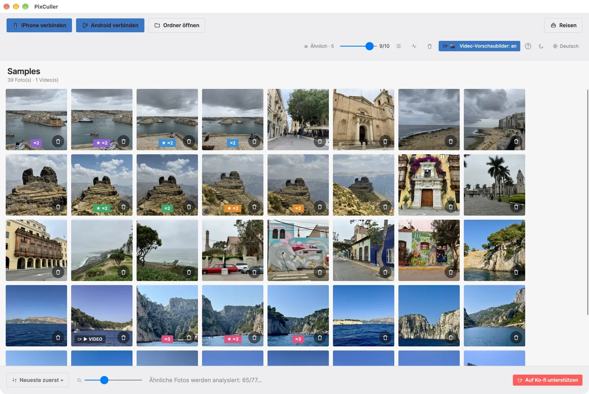
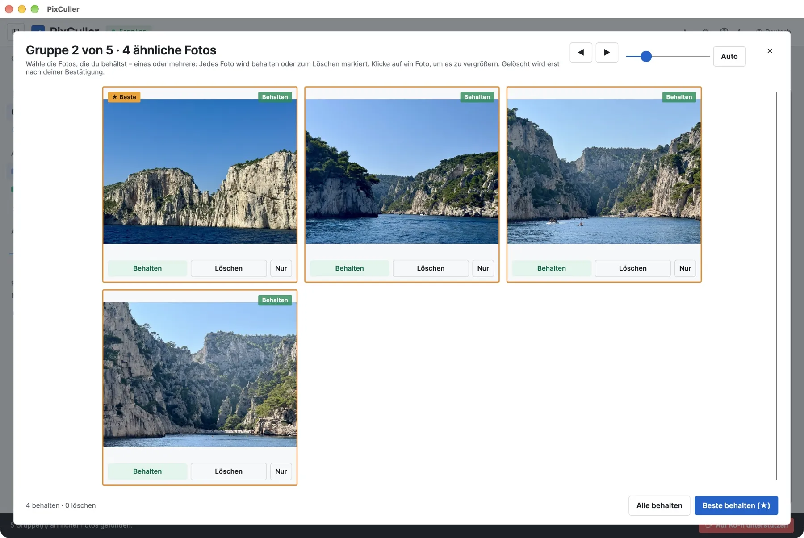
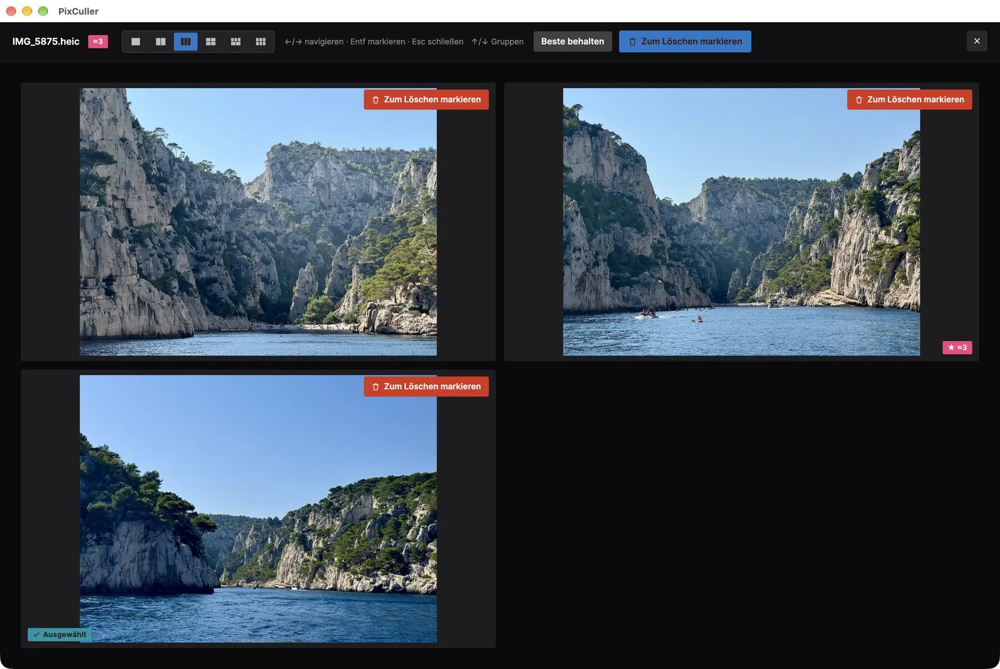
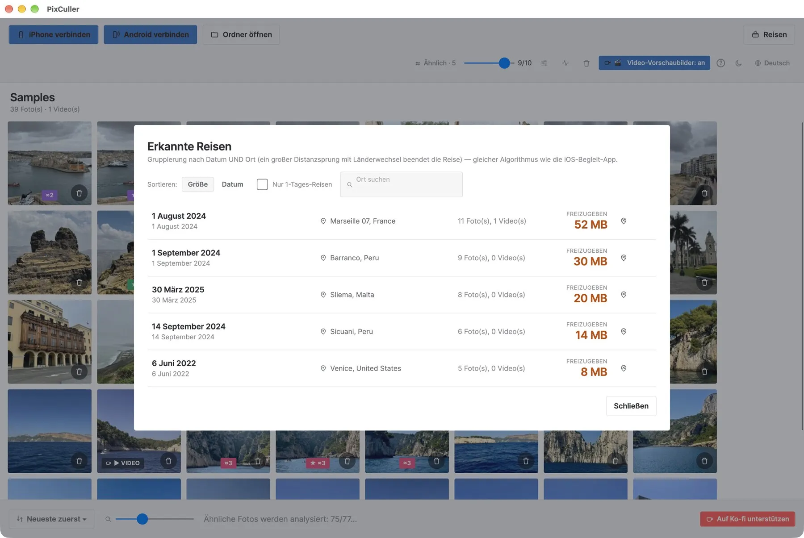
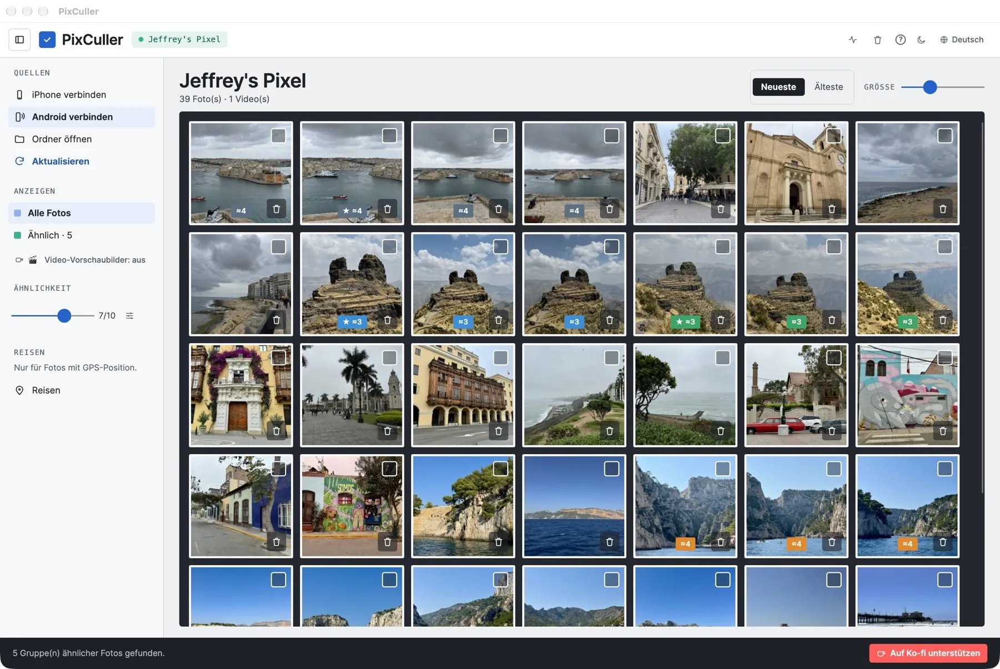

Tausende iPhone- und Android-Fotos am Mac oder PC sortieren
PixCuller ist eine vollwertige Desktop-Anwendung: Sie zeigt die gesamte Fotorolle deines iPhones oder Android-Telefons nach Aufenthalt gruppiert, vergleicht deine Fotos nebeneinander und löscht in großen Mengen, was sich nicht mehr zu behalten lohnt — direkt von deinem Mac oder PC aus.

Ein Blick in die App




Telefon in einer Minute verbinden
Beim ersten Start fragt PixCuller, wo deine Fotos sind, und führt dich Schritt für Schritt.
iPhone, per USB
Mac und Windows. Schließe das iPhone an, entsperre es und tippe auf „Vertrauen“, dann klicke auf „iPhone verbinden“. Unter Windows zuerst die kostenlose App Apple-Geräte installieren.
Android, per USB
Windows, und Mac mit macOS 27 oder neuer. Entsperre das Telefon, schließe es an und wähle „Dateiübertragung“ in der USB-Benachrichtigung, dann klicke auf „Android-Telefon“ und „Per USB verbinden“. Auf dem Telefon muss nichts installiert werden.
Ein Ordner
Jeder Ordner auf deinem Computer oder einem Laufwerk: Klicke auf „Ordner öffnen“ oder ziehe ihn auf das Fenster. Kein Telefon nötig, kein Tageslimit.
Was die App kann
Ansicht "Reisen / Aufenthalte"
Deine gesamte Fotobibliothek automatisch nach Aufenthalt gruppiert (Zeit UND Ort) — erkenne auf einen Blick, welche Reisen am meisten Platz beanspruchen.
Seite-an-Seite-Vergleich
Zeige bis zu 6 ähnliche Fotos gleichzeitig an, um das beste auszuwählen — ideal zum Sortieren von Serienbildern und Beinahe-Duplikaten.
Sicheres Löschen in großen Mengen
Markiere Hunderte von Fotos in wenigen Klicks. Bei einem iPhone oder Android-Telefon löscht PixCuller sie direkt über das USB-Kabel und bewahrt standardmäßig 30 Tage lang eine Kopie auf deinem Computer auf; in einem Ordner landen sie im Papierkorb. Details und Bedingungen weiter unten.
Die Größe, die zählt
Sortiere und filtere nach eintägigem Aufenthalt, nach ausgeschlossenem Ort (Zuhause, Arbeit...), nach Größe — Filter, die auf Geschwindigkeit ausgelegt sind.
Direkte Verbindung zum Telefon
Schließe dein iPhone oder Android-Telefon per USB-Kabel an: PixCuller liest deine Fotorolle direkt, ganz ohne Cloud und ohne Server.
100 % auf dem Gerät
Kein Foto, kein GPS-Standort wird jemals irgendwohin gesendet. Die Ortserkennung läuft vollständig lokal, ohne Konto und ohne Abo.
Kostenlos, wirklich
Kein Abo, keine In-App-Käufe, kein Konto.
PixCuller
0 $
Durchsuchen, vergleichen, sortieren und löschen, auf einem iPhone, einem Android-Telefon oder in einem Ordner, ohne Tageslimit. Mac und Windows.
PixCuller funktioniert allein: Keine andere App muss gekauft oder installiert werden.
Vom Computer aus löschen: iPhone und Android
iPhone: PixCuller löscht die Fotos direkt über das USB-Kabel, ohne Tageslimit und ohne etwas zu kaufen. Das funktioniert auf jedem Windows-10/11-PC und auf einem Mac mit macOS 27 oder neuer, wenn iCloud-Fotos auf dem iPhone ausgeschaltet ist (ist es eingeschaltet, erlaubt Apple dieses Löschen nicht: Schalte es unter Einstellungen > [dein Name] > iCloud > Fotos aus oder lösche in der Fotos-App des iPhones). Das Löschen ist auf dem iPhone sofort und endgültig: Die Fotos landen nicht in „Zuletzt gelöscht“. Standardmäßig bewahrt PixCuller 30 Tage lang eine Kopie jedes gelöschten Elements auf deinem Computer auf, in einem Ordner „PixCuller Trash“ im Ordner Bilder, sodass sich ein Fehler durch erneutes Importieren der Datei rückgängig machen lässt. Unter macOS 26 oder älter zeigt und sortiert PixCuller die Fotos des iPhones, kann sie aber nicht löschen: Ein Banner in der App weist darauf hin, und du löschst in der Fotos-App des iPhones.
Android: Auch hier löscht PixCuller die Fotos direkt über das USB-Kabel, auf jedem Windows-10/11-PC und auf einem Mac mit macOS 27 oder neuer, ohne etwas auf dem Telefon zu installieren. Das Löschen ist sofort und endgültig (die Fotos landen nicht im Papierkorb des Telefons), mit derselben 30-Tage-Kopie auf dem Computer. In Ordnern auf deinem Mac oder PC landen die Dateien im Papierkorb.
Anleitungen zum Sortieren deiner Fotos am Computer
So sortierst du deine iPhone-Fotos am Mac
Tausende iPhone-Fotos am Mac sortieren: was Fotos und Digitale Bilder können und was nicht, und ein schnellerer Weg zum Gruppieren und Löschen.
So sortierst du deine iPhone-Fotos am Windows-PC
Tausende iPhone-Fotos unter Windows 10 oder 11 sortieren: was die Fotos-App und der Explorer zeigen, und ein schnellerer Weg zum Sortieren und Löschen.
So sortierst du Tausende Fotos schneller am Mac oder PC
Warum das Sortieren am großen Bildschirm so viel schneller geht als am Telefon – und eine einfache Methode für Tausende Fotos in einer Sitzung.
So gibst du iPhone Speicher von einem Mac oder Windows-PC aus frei
Schließe dein iPhone an, sortiere Fotos auf einem großen Bildschirm und lösche, was du nicht brauchst – ohne iCloud und ohne dass etwas online gesendet wird.
So vergleichst du ähnliche Fotos und behältst das beste
Eine einfache Routine, um unter fast identischen Fotos die beste Aufnahme zu wählen: worauf du achtest und wie es am großen Bildschirm schnell geht.
So findest du doppelte und ähnliche Fotos am Mac
Doppelte Fotos am Mac finden: exakte Kopien, Serien und fast identische Aufnahmen in Ordnern oder auf einer externen Festplatte, den Rest in den Papierkorb.
So findest du doppelte und ähnliche Fotos unter Windows 10 oder 11
Doppelte Fotos unter Windows finden: exakte Kopien, Serien und fast identische Aufnahmen in Ordnern oder auf externen Festplatten, den Rest in den Papierkorb.
So sortierst du einen großen Fotoordner oder eine ganze externe Festplatte
Alte Backups, Speicherkarten, eine externe Festplatte voller Fotos: eine einfache Methode, Tausende Dateien nach Reisen zu sortieren und Doppelte zu entfernen.
So sortierst du deine Android-Fotos am Mac
Ein Mac tat sich lange schwer, Android-Telefone per USB zu lesen. So sortierst du Tausende Android-Fotos am Mac mit macOS 27 und löschst, was du nicht brauchst.
So sortierst du deine Android-Fotos am Windows-PC
Tausende Android-Fotos unter Windows 10 oder 11 sortieren: was Datei-Explorer und Fotos-App zeigen, und ein schnellerer Weg zum Vergleichen und Löschen.
So gibst du Android-Speicher von einem Mac oder PC aus frei
Verbinde dein Android-Telefon per USB, sortiere Fotos am großen Bildschirm und lösche, was du nicht brauchst, ohne Google One und ohne etwas hochzuladen.